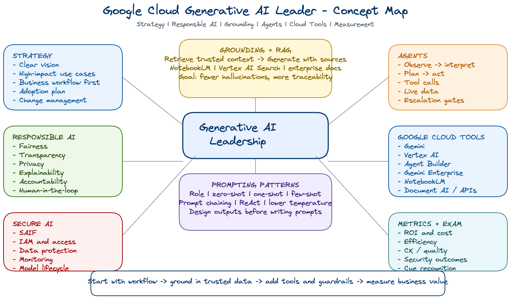

Google Cloud Generative AI Leader: What I Learned

I completed the Google Cloud Generative AI Leader learning path and passed the certification exam on July 24, 2026. This post is my practical write-up: less of a certificate announcement, more of a structured reflection on what the course changed in how I think about enterprise GenAI.
My main takeaway is that GenAI leadership is not just about knowing which model to call. It is about choosing the right use case, grounding the system in trustworthy data, designing the right human review loop, and measuring whether the work actually changes business outcomes.

Compact Excalidraw concept map of the GAIL learning map: leadership, governance, grounding, agents, cloud tooling, measurement, and exam readiness.
I also split the core study material into smaller pages so each concept area can be read independently. Use these as quick revision notes before reviewing the full blog.
Full reading index: GAIL reading materials.
GenAI is moving quickly, but the hard part at work is not usually the demo. The hard part is converting a promising idea into something reliable, governed, secure, explainable, and useful enough that other teams can trust it. That is why I wanted a leadership-oriented certification instead of a model-only deep dive.
| What I wanted to sharpen | Why it matters in enterprise work |
|---|---|
| Use-case selection | Start from business value, not model novelty. |
| Responsible AI | Make fairness, transparency, privacy, and accountability part of design from day one. |
| Grounding and RAG | Reduce hallucination by connecting outputs to verifiable enterprise knowledge. |
| Agentic workflows | Understand when an agent needs tools, live data, and a reasoning loop. |
| Measurement | Track ROI, efficiency, customer experience, cost, safety, and operational health. |
The cleanest framework from the course was the layered view of generative AI. It helps avoid mixing infrastructure choices, model choices, product choices, and business outcomes into one blurry conversation.
The certification frames leadership as a blend of strategy, governance, adoption, and technical fluency. A leader does not need to personally write every prompt or tune every model, but they do need to make the system direction clear.
Grounding connects AI output to verifiable sources. Retrieval-Augmented Generation, or RAG, usually follows two steps: retrieve relevant information from a source, then generate an answer using that retrieved context.
| Without grounding | With grounding / RAG |
|---|---|
| Uses training data and prompt context only. | Uses external documents, databases, search systems, or enterprise knowledge. |
| More likely to hallucinate when facts are missing or stale. | More traceable because claims can point back to source material. |
| Harder to govern for policy-sensitive workflows. | Better fit for company docs, policy Q&A, financial analysis, and internal search. |
Human review is not a failure of automation. It is a design choice for high-risk, ambiguous, sensitive, or context-heavy work. The course reinforced that human review can happen before generation, after generation, or at escalation points in an agent workflow.
The exam patterns made the prompting techniques easy to separate:
The certification is product-aware without being only a product catalog. These are the distinctions I found most useful to remember.
| Tool / product area | When I would reach for it |
|---|---|
| Gemini | General multimodal generation, ideation, drafting, summarization, and productivity support. |
| NotebookLM | Grounded research over a focused set of uploaded documents. |
| Gemini Enterprise | Enterprise-wide search, assistants, and agents across connected business systems. |
| Vertex AI | Build, deploy, tune, manage, and evaluate AI workloads on Google Cloud. |
| Vertex AI Search / Agent Search | Ground responses in enterprise data, external sources, or Google knowledge sources. |
| Vertex AI Agent Builder | Build managed agents that use tools, data, and structured workflows. |
| Gemini Code Assist | Developer productivity: code suggestions, explanations, and implementation support. |
| Imagen / Veo | Image generation and video generation use cases, respectively. |
My preparation had three parts: classroom training, course modules and labs, and practice-question pattern review. The goal was not memorizing every product name. The goal was recognizing the business situation and mapping it to the right AI pattern.
| Question cue | Likely pattern |
|---|---|
| Must answer from company policy or verified documents | Grounding / RAG |
| Needs live data and can take actions | Agent with tools |
| Needs consistent brand voice or expert tone | Role prompting plus examples |
| Public chatbot with unsafe content risk | Safety settings and moderation |
| Leadership adoption or governance question | Vision, ethical guidelines, compliance, measurement |
| Research over uploaded PDFs or docs | NotebookLM |
The biggest connection for me is with applied AI systems, not generic chatbot demos. In pricing, forecasting, platform migration, and observability work, the same leadership questions keep appearing: what evidence should the system use, how should users verify the output, what can be automated safely, and how do we measure whether the workflow improved?
| Work area | GAIL concept that applies | Practical translation |
|---|---|---|
| Pricing explainability | Grounding and RAG | Answers should cite product, pricing, or graph context instead of free-form guesses. |
| Agentic workflows | Reasoning loops and tool use | Agents need clear tool contracts, state, logs, and escalation rules. |
| Platform migration | Measurement and change management | Success is runtime, reliability, cost, adoption, and operational clarity - not migration alone. |
| Security and governance | SAIF and Responsible AI | Access control, monitoring, data quality, and review gates belong in the architecture. |
| Knowledge management | Gemini Enterprise / NotebookLM style grounding | Internal docs become more valuable when they are structured for retrieval and verification. |
Passing the certification was useful, but the bigger value was forcing a structured view of enterprise GenAI. The lesson I want to carry forward is simple: start with the workflow, ground the system in trusted data, design review loops intentionally, and measure outcomes that matter.